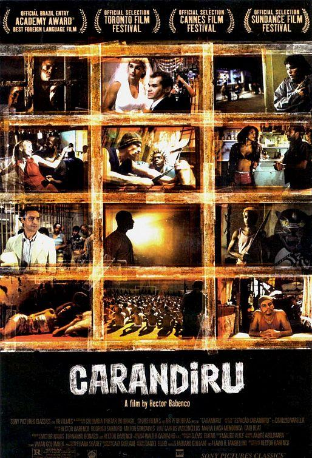
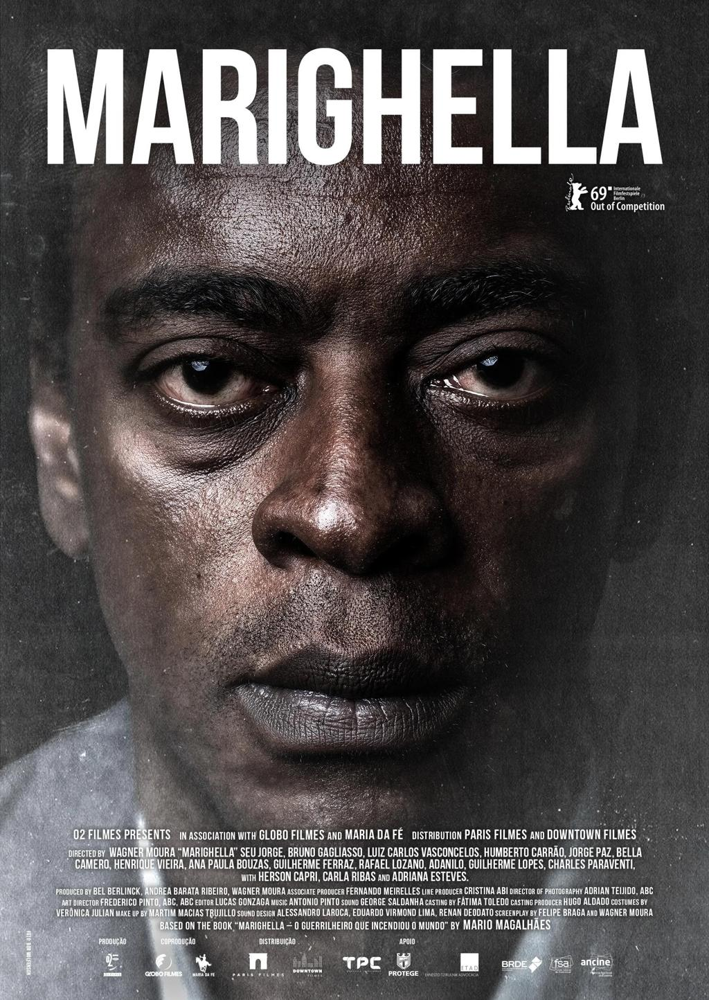
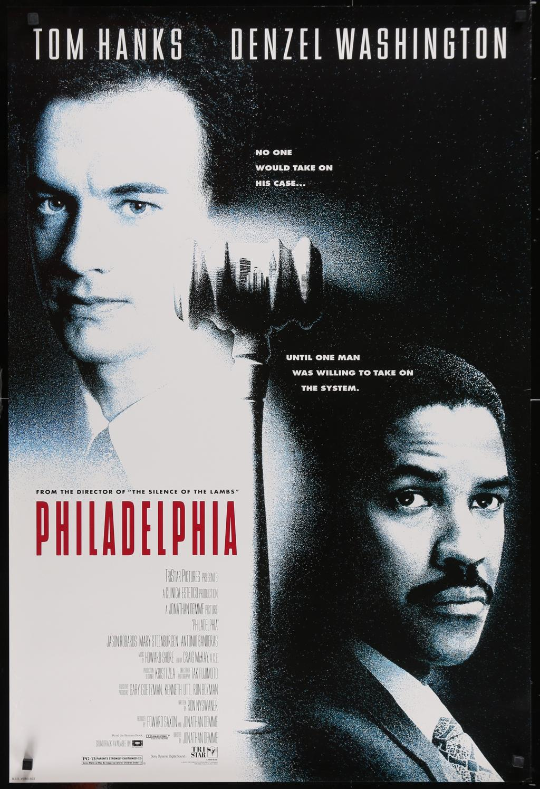
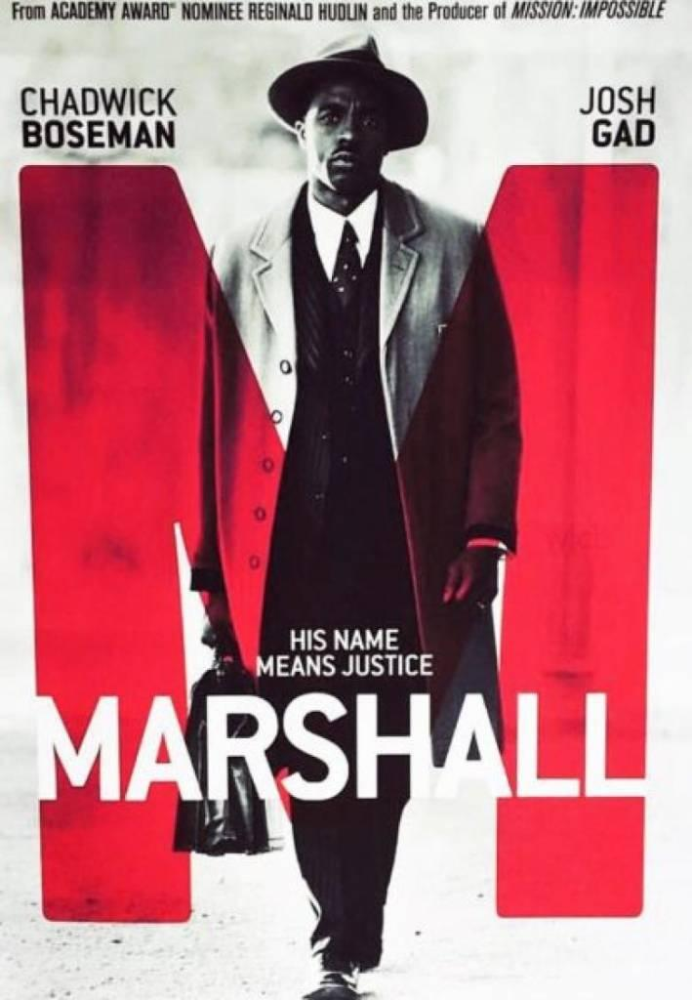

As férias acadêmicas são uma excelente oportunidade para descansar, mas também para ampliar conhecimentos de forma leve e prazerosa. O cinema permite compreender como o Direito influencia a vida das pessoas, retratando julgamentos históricos, dilemas éticos, grandes advogados, investigações criminais, direitos humanos, corrupção, responsabilidade civil, discriminação e muito mais.
Pensando nisso, o Centro Acadêmico de Estudos de Direito (CAED UNISINOS) preparou uma seleção especial de filmes para estudantes de Direito. A lista reúne clássicos nacionais e internacionais que dialogam com diversas disciplinas da graduação, como Direito Constitucional, Direito Penal, Processo Penal, Processo Civil, Direito Civil, Direito do Trabalho, Direitos Humanos, Criminologia, Filosofia do Direito e Ética Profissional.
Independentemente do semestre em que você esteja, todos os filmes trazem importantes reflexões sobre Justiça, cidadania e advocacia.
📅 As aulas retornam no dia 3 de agosto de 2026. Até lá, aproveite o recesso para aprender também fora da sala de aula.
🇧🇷 Filmes Brasileiros

1. O Caso dos Irmãos Naves (1967)
Baseado em um dos maiores erros judiciais da história brasileira, mostra como confissões obtidas mediante tortura podem destruir vidas e comprometer todo o sistema de Justiça.

2. Carandiru (2003)
Apresenta a realidade do antigo Complexo do Carandiru, abordando superlotação, violência, dignidade da pessoa humana e o Massacre de 1992.

3. Tropa de Elite (2007)
Excelente para discutir violência urbana, políticas públicas e limites da atuação estatal.

4. Tropa de Elite 2: O Inimigo Agora é Outro (2010)
Debate corrupção sistêmica, milícias, improbidade administrativa e relações entre política e segurança pública.

5. Pixote: A Lei do Mais Fraco (1981)
Retrata o abandono de crianças e adolescentes e permite discutir o ECA.

6. O Auto da Compadecida (2000)
Embora seja uma comédia, provoca reflexões sobre justiça, moral, ética e religião.

7. Que Horas Ela Volta? (2015)
Excelente para estudar direitos trabalhistas, dignidade e igualdade de gênero.

8. Hoje Eu Quero Voltar Sozinho (2014)
Aborda inclusão, acessibilidade, diversidade e direitos das pessoas com deficiência.

9. Central do Brasil (1998)
Permite refletir sobre cidadania, identidade, registro civil e acesso à Justiça.

10. Marighella (2021)
Importante para compreender a resistência durante a ditadura militar.
🌍 Filmes Internacionais

11. 12 Homens e uma Sentença (1957)
Considerado por muitos professores de Direito o melhor filme jurídico da história.

12. Questão de Honra (1992)
Discussão sobre ética profissional, hierarquia militar e responsabilidade penal.

13. Filadélfia (1993)
Um clássico sobre discriminação, HIV e direitos trabalhistas.

14. O Poder e a Lei (2011)
Mostra os bastidores da advocacia criminal.

15. Erin Brockovich – Uma Mulher de Talento (2000)
Excelente para estudar responsabilidade civil e danos ambientais.

16. Luta por Justiça (2019)
Baseado em fatos reais sobre um advogado que luta contra a injustiça.

17. O Veredicto (1982)
Erro médico, responsabilidade civil e ética na advocacia.

18. Meu Primo Vinny (1992)
Apesar da comédia, apresenta importantes lições sobre produção de provas e contraditório.

19. O Preço da Verdade (2019)
Caso real envolvendo contaminação ambiental.

20. A Firma (1993)
Aborda ética, crime organizado e advocacia empresarial.

21. Marshall – Igualdade e Justiça (2017)
Baseado na carreira do futuro ministro da Suprema Corte dos EUA.

22. O Vento Será Tua Herança (1960)
Discussão sobre liberdade de ensino e liberdade religiosa.

23. Julgamento em Nuremberg (1961)
Indispensável para estudar crimes contra a humanidade.

24. Os 7 de Chicago (2020)
Direitos civis e liberdade de manifestação.

25. Anatomia de uma Queda (2023)
Processo penal, prova e dúvida razoável.

26. As Duas Faces de um Crime (1996)
Excelente para Processo Penal.

27. O Homem que Fazia Chover (1997)
Advocacia, seguros e acesso à Justiça.

28. A Qualquer Preço (1998)
Responsabilidade civil e dano ambiental.

29. Ponte dos Espiões (2015)
Direito Internacional e garantias processuais.

30. O Sol é para Todos (1962)
Um dos maiores clássicos sobre advocacia, igualdade perante a lei e combate ao preconceito.
Boa sessão e bom recesso!
Mais do que entretenimento, o cinema pode ampliar o olhar crítico sobre o Direito, estimular o raciocínio jurídico e fortalecer valores como ética, cidadania, dignidade da pessoa humana e compromisso com a Justiça.
O CAED UNISINOS deseja a todos os estudantes um excelente período de descanso e aprendizado. Aproveite as férias, assista aos filmes indicados e retorne às aulas, no dia 3 de agosto de 2026, com novas perspectivas para os desafios da formação jurídica.
#CinemaJurídico #FériasComDireito #CAEDUnisinos #FilmesParaEstudantes #DireitoECinema